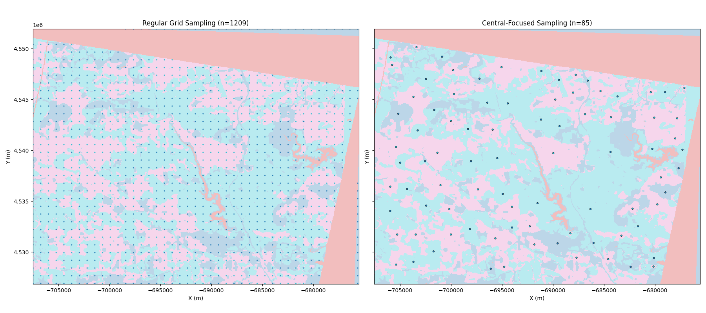

Note
Go to the end to download the full example code.
EnMap Data Extraction and Point Sampling¶
This example demonstrates how to extract lithological information from EnMap segmentation results and sample it for use in 3D geological modeling.
Overview
EnMap (Environmental Mapping and Analysis Program) data, once segmented into lithological units, provides a valuable surface constraint for geological models. However, hyperspectral data is typically high-resolution, leading to millions of points.
This example shows several strategies to reduce the data volume while preserving critical information:
Regular Grid Sampling: Simple downsampling on a regular grid.
Boundary-Focused Sampling: Keeping a higher density of points near geological contacts.
Central-Body Sampling: Extracting points from the most certain parts (centers) of geological units.
Import Libraries¶
import os
import numpy as np
import rasterio
from matplotlib import pyplot as plt
from rasterio.windows import from_bounds
import gempy as gp
from mineye.config import paths
# Set random seed for reproducibility
np.random.seed(1234)
Define Model Extent and Resolution¶
We use the same extent as in previous Tharsis examples.
min_x = -707_521
max_x = -675558
min_y = 4526832
max_y = 4551949
max_z = 505
model_depth = -500
extent = [min_x, max_x, min_y, max_y, model_depth, max_z]
Path to EnMap segmentation results¶
# Get base directory and locate EnMap data
base_dir = paths.get_base_dir()
enmap_dir = os.path.join(base_dir, 'examples', 'Data', 'Segmentation_Input_Data', 'Enmap')
enmap_path = os.path.join(enmap_dir, 'EPSG3857_EnMap_result_n4_betajump0.1.tif')
topo_path = paths.get_topography_path()
if not os.path.exists(enmap_path):
print(f"⚠️ EnMap file not found at {enmap_path}. Skipping example logic.")
# Exit gracefully if data is missing for sphinx-gallery
import sys
sys.exit(0)
Extraction Functions¶
These functions implement different sampling strategies.
Distance Transform and Central Sampling
The “Distance Transform” computes the distance from each pixel to the nearest boundary. For geological unit sampling, the local maxima of this transform represent the points most distant from any contact (the “centers” of the units).
Sampling at these locations provides the most certain lithological constraints, as points near boundaries are more likely to be affected by mixed pixels or segmentation uncertainty.
def extract_points_from_raster(raster_path, extent, step=10, topo_path=None):
"""Simple regular grid extraction."""
with rasterio.open(raster_path) as src:
left, right, bottom, top = extent[0], extent[1], extent[2], extent[3]
window = from_bounds(left, bottom, right, top, src.transform)
data = src.read(1, window=window)
transform = src.window_transform(window)
rows, cols = data.shape
row_indices = np.arange(0, rows, step)
col_indices = np.arange(0, cols, step)
ii, jj = np.meshgrid(row_indices, col_indices, indexing='ij')
labels = data[ii.flatten(), jj.flatten()]
valid_mask = ~np.isnan(labels) & (labels != 1) # Ignore label 1 (unclassified/background)
# Combine label 3 and 0 (mapped to 0)
labels_valid = labels[valid_mask]
labels_valid[labels_valid == 3] = 0
ii_valid, jj_valid = ii.flatten()[valid_mask], jj.flatten()[valid_mask]
xs, ys = rasterio.transform.xy(transform, ii_valid.tolist(), jj_valid.tolist())
if topo_path:
with rasterio.open(topo_path) as topo_src:
zs = np.array([val[0] for val in topo_src.sample(zip(xs, ys))])
else:
zs = np.full_like(xs, extent[5])
return np.column_stack((xs, ys, zs)), labels_valid, data, (left, right, bottom, top)
def extract_points_central_reduced(raster_path, extent, min_distance=25, topo_path=None):
"""Extract points from the center of bodies using distance transform."""
from skimage.segmentation import find_boundaries
from skimage.feature import peak_local_max
from scipy import ndimage
with rasterio.open(raster_path) as src:
left, right, bottom, top = extent[0], extent[1], extent[2], extent[3]
window = from_bounds(left, bottom, right, top, src.transform)
data = src.read(1, window=window)
transform = src.window_transform(window)
data_mapped = data.copy()
mask_nan = np.isnan(data)
data_mapped[data_mapped == 3] = 0
data_temp = data_mapped.copy()
data_temp[mask_nan] = 255
boundaries = find_boundaries(data_temp, mode='thick')
dist_mask = ~boundaries & ~mask_nan
dist_transform = ndimage.distance_transform_edt(dist_mask)
unique_labels = np.unique(data_mapped)
unique_labels = unique_labels[~np.isnan(unique_labels) & (unique_labels != 1)]
all_ii, all_jj, all_labels = [], [], []
for label_val in unique_labels:
mask = (data_mapped == label_val)
peaks = peak_local_max(dist_transform, min_distance=min_distance, labels=mask)
if len(peaks) > 0:
all_ii.extend(peaks[:, 0]); all_jj.extend(peaks[:, 1])
all_labels.extend([label_val] * len(peaks))
ii, jj = np.array(all_ii), np.array(all_jj)
xs, ys = rasterio.transform.xy(transform, ii.tolist(), jj.tolist())
if topo_path:
with rasterio.open(topo_path) as topo_src:
zs = np.array([val[0] for val in topo_src.sample(zip(xs, ys))])
else:
zs = np.full_like(xs, extent[5])
return np.column_stack((xs, ys, zs)), np.array(all_labels), data, (left, right, bottom, top)
Execute Point Extraction¶
print("Extracting points using regular grid...")
xyz_std, labels_std, data, bounds = extract_points_from_raster(enmap_path, extent, step=20, topo_path=topo_path)
print("Extracting central points (distance transform)...")
xyz_central, labels_central, _, _ = extract_points_central_reduced(enmap_path, extent, min_distance=40, topo_path=topo_path)
Extracting points using regular grid...
Extracting central points (distance transform)...
Visualize Strategies¶
Comparison: Raw Raster vs. Sampled Points
We compare the original high-resolution segmentation results with our reduced point sets. Note how the central-focused sampling maintains the structural representation with a fraction of the data volume.
fig, axes = plt.subplots(1, 2, figsize=(18, 8), sharex=True, sharey=True)
# Standard plot
axes[0].imshow(data, extent=bounds, cmap='tab10', interpolation='nearest', alpha=0.3)
axes[0].scatter(xyz_std[:, 0], xyz_std[:, 1], c=labels_std, cmap='tab10', s=2, alpha=0.8)
axes[0].set_title(f'Regular Grid Sampling (n={len(xyz_std)})')
# Central plot
axes[1].imshow(data, extent=bounds, cmap='tab10', interpolation='nearest', alpha=0.3)
axes[1].scatter(xyz_central[:, 0], xyz_central[:, 1], c=labels_central, cmap='tab10', s=10, edgecolors='black', linewidth=0.5)
axes[1].set_title(f'Central-Focused Sampling (n={len(xyz_central)})')
for ax in axes:
ax.set_xlabel('X (m)')
ax.set_ylabel('Y (m)')
plt.tight_layout()
plt.show()

sphinx_gallery_thumbnail_number = 1
Summary¶
The central-focused sampling significantly reduces the number of points while capturing the representative locations for each geological unit. These points can now be used as custom_grid in GemPy to evaluate model likelihood against EnMap observations.
Total running time of the script: (0 minutes 0.237 seconds)